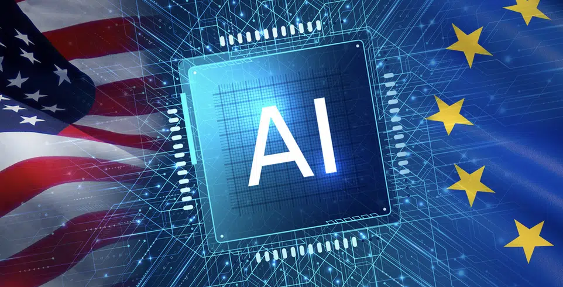

PAISES QUE USAN COTIDIANAMENTE LA INTELIGENCIA ARTIFICIAL
asistentes virtuales

¿Què es una Inteligencia Artificial.
| Estados Unidos (EE.UU) | Diagnóstico médico, vehículos autónomos, asistentes virtuales |
 |
| Reino Unido | Finanzas, atención médica, comercio minorista | |
| China | Reconocimiento facial, vigilancia masiva, comercio electrónico | |